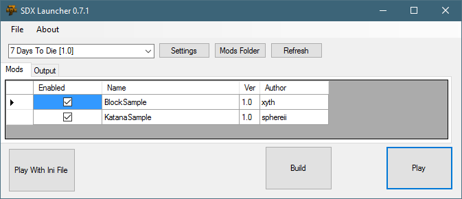

There are three key buttons at the bottom of the SDX Launcher.

SDX 0.7.0 and previous versions came with an -sdxconfig= parameter, that pointed where the SDX mods were located. In SDX 0.7.1 and above, this -sdxconfig parameter has been made optional. However, in order to support existing SDX mods, it is left for compatibility.
When the Play With Ini File is pressed, the game will launch as you would expect. However, rather than referencing the Games' Mods/SDX/Resources folder, it will reference SDX 0.7.1's Target/7DaysDie/Mods folder.
The Build button will do the following:
Restore the Assembly-CSharp.dll and all the XML files from its local back up, if it exists.
If no back up exists, it will make a backup of the Assembly-CSharp and the XML files
Builds and merges any SDX mods you have enabled
Copy the resulting build to your Working folder you've set in the Settings button.
The Play button will run the game's 7daystodie.exe in your Working folder, using its copy of the Mods/SDX/Resources file.
Created with the Personal Edition of HelpNDoc: Easy EPub and documentation editor